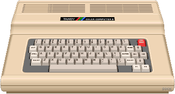
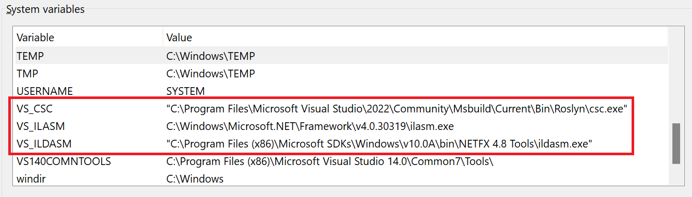

GitHub / commits
Originally I wanted something for this years CoCoFEST 2023 -- but that is just not going to happen. I hope to have a Version 1.0 release ready for CoCoFest 2024. Perhaps by then I can actually go to CoCoFEST. It's definetly on my bucket list!
2/27/2023 4:00 PM: - Change of plans again: removed Retro.IDE and will concetrate solely on this compiler project until I have at least a version 0.1 or higher!
12/11/2022 10:25 PM: - This project is replaced by Retro.IDE
12/11/2022 8:00 PM: - For almost 3 months I've been waffling back-and-forth on how to proceed. As it sits, there is too much code that is not unit-tested to get everything working.
So, indeed I actually need to start over.
I need to start over and bring over the code piece by piece using Test Driven Development (TDD). And get every piece working properly before moving on to the next piece. This will be my acid test of TDD to see if it works and if it's worth it.
Therefore all future development on Retro.NET will take place in the Retro.IDE project. At some point I may break-out Retro.NET from Retro.IDE and make it a stand-alone project. Until then it will be a sub-project of Retro.IDE.
It may look like I am jumping from the pot into the fire, since Retro.IDE is going to be a massively larger project. But after much thought, I want to create these compilers and these tools and they will all share much of the root code. Therefore I will work on them ALL at the same time -- unit-test by unit test.
How do you eat an elephant? One bite at a time!
9/22/2022 5:30 PM: - I am going to put a temporary hold on this project: Just for a few weeks while I figure out some things and make some decisions: Hint - I need to restart the project and migrate the old code over in a methodical fashion while using Test Driven Development (TDD) to drive the progress, direction, and design.
*Edit* 9/25/2022 4:25 AM: - hmm... NO, this is what I do. When it gets tough I want to start over. Or try a different direction (I.e. move the project to Python). This is a bad habit I need to break! Starting over is (almost) NEVER the solution!!
What happened is that I took code from four different projects that I had written quite some time back, up to 2 or 3 years ago, and I put them together as the starting point for the Retro.NET project. I do want to use that code but I needed to bring the code together piece by piece through the process of Unit Testing and get each piece working before moving on to the next. And using the TDD principles I'll be able to refactor and restructure and ensure everything is working properly as I develop and make progress.
*Edit* 9/25/2022 4:35 AM: - That is true; I brought several old projects together and the code is in a bit of a mess... Well -- OK, a lot of a mess. Still, starting over is not the answer. I need to get used to the idea that it is possible to take old code and begin using Unit Testing and TDD principles to fix the code and make it work. And to reorganize and refactor the code.
7/14/2022 10:00 PM: - I am still looking over some open source CPU emulators. There are a many! I'll get there.
In the mean time I am going to take the approach that for each target CPU code generation I need a class for each and every opcode / instruction. Instead of creating a plain text file w/ the assembly language in it. In essence each line will be an instruction class instance of that very opcode. I feel like with that extra layer of structure I will be able to do things and keep track of stuff more efficiently. I mean where do you put the code for tracking each register being used, etc - also, it might be possible to create a second or more passes just at the assembly opcode/instruction level to optimize the generated code. We will see if that works out. I am generating all the instruction / opcode classes instead of creating them manually.
7/7/2022 6:50 AM: - There has been an absolute explosion of CPU emulators written in the last few years. I am searching through open source CPU emulators to see what is available that might be a good fit for what I need, which primarily means written in C#. Secondarily it needs to be straight-forward and easy to re-use / integrate. I've already located 10 possibilities just for the Z80. One that stands out is: Collection of eight-bit processor emulators (for various projects). Not only is the 6809 one of the CPUs there's also the Z80, M6502 & i8080. Looks promising. I will research the others I came across as well for more insight, and possibly better fit.
7/4/2022 6:35 PM: - I can't help but add an emulation layer for each of the CPUs that Retro.NET will target. That is a lot of work, but I believe that in the long run it will save me time.
Here's why; it's not easy testing the code that is generated. It's not easy to do it manually, let alone in automated tests. You have to load an emulator, then you have to load the program you have generated, then you have to run the program and finally you have to compare the results with what you were expecting. That is a drawn out process to do it manually, you will spend a lot of time doing just that. To do that using automated integration testing on multiple emulators is virtually impossible. I'd rather create an emulation layer that is integrated and then all the testing can be automated. Then we can add whatever custom tools we need in the emulation like cycle counting and profiling, etc.
So decision made, I will be adding an emulator to each of the CPU targets.
7/3/2022 2:20 AM: - We need to locate our tools: I am going w/ the latest and greatest Visual Studio 2022 Community Edition.
On my computer:
The C# command line compiler is at
"C:\Program Files\Microsoft Visual Studio\2022\Community\Msbuild\Current\Bin\Roslyn\csc.exe"
The ILDASM is at
"C:\Program Files (x86)\Microsoft SDKs\Windows\v10.0A\bin\NETFX 4.8 Tools\ildasm.exe"
The ILASM was found at
"C:\Windows\Microsoft.NET\Framework\v4.0.30319\ilasm.exe"
Now we make environment variables out of them: note the quotes around the two paths that have spaces in them!

Now when we want to run these from the command line or in a script we can just use the environment variable name.
C:\Jar>%VS_CSC% /?
Microsoft (R) Visual C# Compiler version 4.2.0-4.22252.24 (47cdc16a)
Copyright (C) Microsoft Corporation. All rights reserved.
C:\Jar>%VS_ILDASM% /?
Microsoft (R) .NET Framework IL Disassembler. Version 4.8.3928.0
Copyright (c) Microsoft Corporation. All rights reserved.
C:\Jar>%VS_ILASM% /?
Microsoft (R) .NET Framework IL Assembler version 4.8.4161.0
Copyright (c) Microsoft Corporation. All rights reserved.
Alternately, we could put those paths in our system PATH environment variable.
7/2/2022 8:30 PM: - The Plan
Starting w/ -Hello World- systematically make all parts work for each target.
At first concentrate on 4 target systems - later we will add more.
- Interpreter Target. This is our own .NET Engine written in C#. It is for our own understanding of how the IL byte codes work. If we are able to interpret them then we should be able to write assembly code that does the same thing in the target CPUs. In the end the interpreter could also possibly be used as an interactive development tool if we implement the retro libraries and emulate those systems. The interpreter will not be written for efficiency, but for documenting how the byte codes are supposed to work.
- The 6x09 Target (CoCo1&2,3)
- The 6803 Target (MC-10)
- The Z80 Target (MSX)
Then we build on Hello World code and keep adding more and more functionality which will add more IL byte codes that we need to implement in all four targets above.
6/15/2022 - Retro.NET
The goal is to create an Ahead-of-Time (AoT) compiler for the .NET byte code Common Intermediate Language (CIL) (formerly called MSIL) for retro 8 and 16 bit CPUs. It's a lofty goal, but to keep it simple we are not going to be using ANY of the .NET libraries other than a subset of the Console library. Therefore a person will not be able to just grab any source code or .NET executable and compile it for a retro computer. Instead I plan on having separate libraries that are optimized for the old 8 & 16 bit computers.
You will be able to create programs written in C# for your old computer using one of Microsoft Visual Studio versions. You should be able to use any version. It should be pretty neat.
I've made the GitHub repo for the project public and will be developing in the open. Hopefully that will make me stick with it and help me make regular progress.